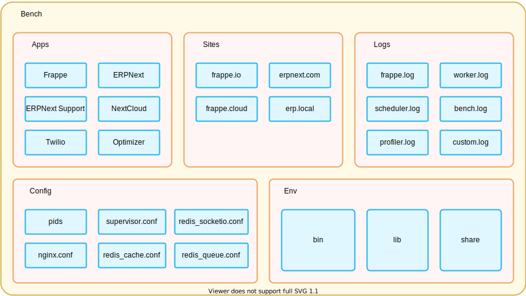

Frappe is a fullstack, web framework written in python and javascript.
Frappe is used to build data-driven application and comes with almost everything you need to build to a modern web application.
Meta data is first class citizen in frappe
It is used to generate databse tables, designs forms and configure a lot of features
Meta data is stored in a model which is known as DocType in frappe.
Frappe Framework uses Python for the backend and JavaScript for the frontend
It support MariaDB and PostgreSQL databases.
Frappe comes with a feature rich admin interface called the Desk.
Desk handles forms, navigation, lists, menus, permission, file attachment, and much more.
When we create a DocType in Frappe, a number of views also create inside the desk.
A user is someone who can login to the system and perform authorize actions like creating, updating, or deleting records.
Frappe supports real time events using Nodejs and socketio.
It supports sending and receiving eamils, which can also be linked to individual documents
Bench is a command line tool to manage Frappe apps and sites.
It provides an easy interface to help you stepup and manage multiple sites and apps based on frappe framework
To initilize new bench , run this command
bench init <"bench_name">
The default app frappe is a frappe app which acts as the framework for all apps
Frappe apps live in a directory called apps in the frappe-bench directory
Frappe app should have an entry in apps.txt
To create a new apps, run the command
bench new-app "app name"
Frappe is a multi tenant platform and each tenant is called sites.
Sites exist in a directory called sites
To create a new sites, run the command
bench new-site "site_name"